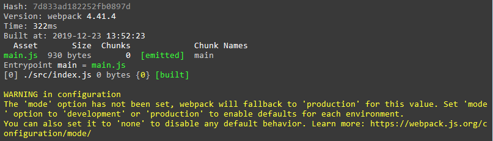
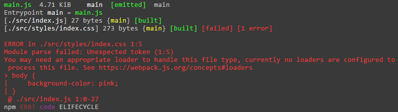
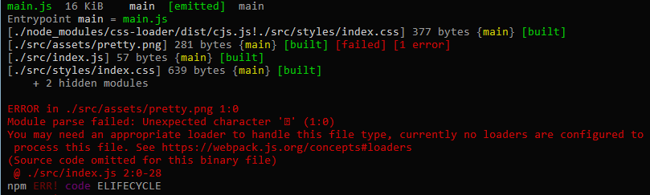

1.创建一个名为demo-webpack的文件夹(名称随意)
2.初始化一个package.json文件
//在cmd窗口中使用以下命令快速创建
npm init -y3.安装webpack和webpack-cli到开发依赖下
npm i webpack -D
npm i webpack-cli -D4.配置package.json
"scripts": {
"test": "echo \"Error: no test specified\" && exit 1",
+ "build": "webpack"
},5.创建入口文件src/index.js
6.运行npm run build命令测试打包是否正常
打包后将会自动创建dist/main.js文件，也就是默认的出口文件
(到这一步为止，目前的目录结构)
├─dist
└─main.js
├─node_modules
├─src
└─index.js
├─package.json
└─package-lock.json7.配置打包模式
在第6步的时候，你将会看到如下的警告：

这是因为我们还没有设置打包的模式，所以webpack默认以生产(production)模式完成打包
开始配置
需要在根目录下创建webpack默认配置文件webpack.config.js
// 内容如下：打包模式分为两种development(开发模式打包) production生产模式打包
const config = {
mode: "development"
}
// 这里可以直接导出上面的对象，但是使用变量保存可以使代码更美观
module.exports = config配置完以上内容后再运行npm run build就会发现先前的警告信息消失了。
8.配置入口文件和出口文件
dist/main.js默认的入口文件为src/index.js
依旧是在webpack.config.js中配置
+ // 引入path模块处理路径问题
+ const path = require('path')
const config = {
mode: "development",
+ entry: "./src/index.js",
+ output: {
+ path: path.join(__dirname, './dist'),
+ filename: "main.js"
+ }
}
module.exports = config通过以上的步骤就已经搭建了一个简单的webpack架子，然后让我们添加一个css文件来测试下打包
index.html，然后再新建一个src/styles/index.css文件①在index.html中添加一些简单的结构
<!DOCTYPE html>
<html lang="en">
<head>
<meta charset="UTF-8">
<title>Document</title>
</head>
<body>
<script src="./dist/main.js"></script>
</body>
</html>②在src/styles/index.css添加一些简单的样式
body {
background-color: pink;
}③在index.js中引入css文件
import './styles/index.css'④最后，运行npm run build打包，并得到如下报错信息

报错部分明确的告诉你'You may need an appropriate loader to handle this file type'
翻译过来大致就是：你或许需要一个适当的加载器来处理这个类型的文件
所以接下来我们需要下载用于解析CSS文件的loader
style-loader和css-loadernpm i style-loader css-loader -Dwebpack.config.js中添加如下配置const config = {
mode: "development",
entry: "./src/index.js",
output: {
path: path.join(__dirname, './dist'),
filename: "main.js"
},
+ module: {
+ rules: [
+ {
+ test: /\.css$/,
+ use: [
+ 'style-loader',
+ 'css-loader'
+ ]
+ }
+ ]
+ }
}npm run build就可以打开根目录下的index.html文件预览一番了什么?你说页面有点丑? 那告诉你怎么打包一个优美的图片好了
操作如下：
①在src/assets文件夹下放入一张优美的图，这里放入的是pretty.png
②在index.html的body中添加如下代码
<div id="app">
<img id="img" src="nothing.png" alt="">
</div>③在src/index.js中导入这张图片并动态设置给img标签
import pic from './assets/pretty.png'
const img = document.getElementById('img')
img.src = './dist/' + pic;④运行npm run build打包，并得到如下报错

同样，这里需要配置对应的加载器来加载图片文件。
所以还是老套路，先下载加载器，然后在webpack中配置一下
①安装file-loader加载器
npm i file-loader -D②在webpack.config.js中添加配置
module: {
rules: [
{
test: /\.css$/,
use: [
'style-loader',
'css-loader'
]
},
+ {
+ test: /\.png$/,
+ use: [
+ 'file-loader'
+ ]
+ }
]
}③运行npm run build就可以看到优美的图片了
PS:
.png后缀的图片的话，需要在上面正则匹配(test: /\.png$/)中修改一下哈webpack最初是用于打包js文件的，所以如果想要打包其它类型的文件都需要配置对应的loaderwebpack官方也都有列出不少